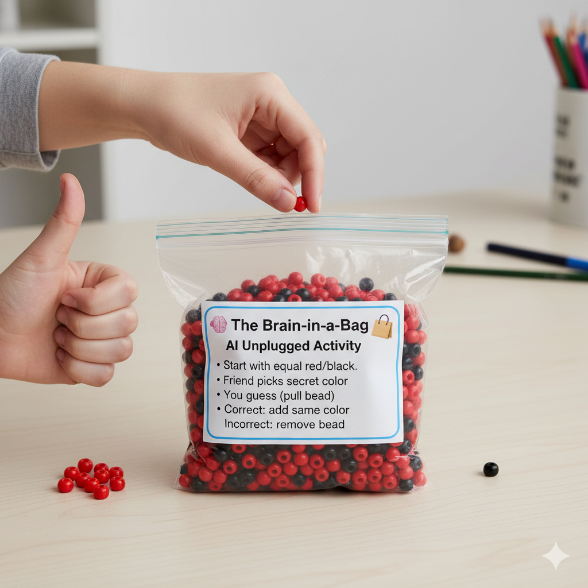

How Computers "Talk"
Isn't it cool when you can talk to a computer and it understands you? That's called Natural Language Processing, or NLP for short. It's all about teaching computers to understand and use human languages.
Think about when you ask a smart speaker to tell you a joke, or when your phone corrects your spelling in a text message. That's NLP at work! It's a very important part of AI that helps us communicate with our devices.
🧠 The Brain-in-a-Bag 🛍️
This AI Unplugged activity is a fun way to see how a neural network can be "programmed" to learn.
You will need:
- A bag
- Many small items of two different colors (e.g., red and black beads)
- A friend to play with
How to Play:
This game simulates a simple neural network. The bag is the "brain", and the beads are like "neurons".
- Start with an equal number of red and black beads in the bag.
- Your friend will secretly pick a color (red or black).
- You will try to guess the color your friend picked.
- Reach into the bag and pull out a bead. The color of the bead is your guess.
- If you guessed correctly, your friend says "Yes!". To reward the "brain", you put the bead back in the bag and add another bead of the same color.
- If you guessed incorrectly, your friend says "No!". To "punish" the brain, you take the bead out of the bag.
- Play again! Over time, the bag will have more of the color that your friend picked, and you will be more likely to guess correctly. The "brain" has learned!

🏡 Back to All Lessons